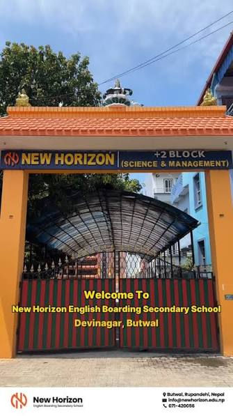

About New Horizon

New Horizon English Boarding Secondary School, established in 1989 (2046 B.S.), is a prominent private institution
located in Devinagar, Butwal-11, Nepal. The school is widely recognized for its academic excellence, having produced
multiple national-level toppers (SLC Board 1st) and receiving the Western Region Education Shield six times.
Our prime focus is on developing knowledgeable, inquiring and caring young people who can help to create a better and
more peaceful world. Thus, we strive equipping our young mind with technical, social and academic skills to stand in the
global community.
Its Acheivements
 This is an A Graded school in the W.D. Region.
This is an A Graded school in the W.D. Region.
This institute has been able to produce SLC board first candidates twice and Board 10 candidates.
This institute has been awarded with the Western Region Education shields for 6th times likely- 2061, 2063, 2064,
2065,
2067 and 2069.
This institute has obtained the best results in +2 levels too. In 2067 our students (both in science and commerce
streams) have topped in this region.
We are also ahead in BBA, BBS and MBS results.
The principal, Vice Principals and other Board members are awarded with the Gorkha Dakshinbahu III, Education Awards
and
other awards.
This Institute has produced many national and international level players like- Suchan Shah and his team played U19
Cricket in Hongkong and Mr Rahul BK and Mr. Shakti Gauchan are in the International team doing well for the nation.
Sports and Extra Curiculam Activities
🏏Cricket Domination Championship History:
The school frequently wins major regional titles, including the prestigious
Late Sher Bahadur Century Memorial Inter-School T-20 Cricket Tournament at the Siddhartha Cricket Ground.
National
Exposure: The school's elite squad (competing as New Horizon Butwal) participates in senior national tournaments such as
the Arjun Trophy National T20 Championship.On-Campus Facilities: Features its own dedicated cricket training court
alongside basketball courts to facilitate year-round practice.
🏆 Annual Sports InfrastructurePlus Two Sports Day: A
multi-day tournament curated by the NHI-Sports Club. It covers competitive matches in basketball, football, badminton,
table tennis, chess, and track & field.
NHC Inter-College Futsal: An annual internal and invitation-style futsal
championship organized by the student welfare council.Sports Scholarships: Outstanding student-athletes who represent
the school and win regional or national awards qualify for specialized ECCA extracurricular scholarships.
Academic
Integration: Students in Grades 11 and 12 can choose Sport Science as an elective under the NEB Management stream to
study the technical aspects of sports.